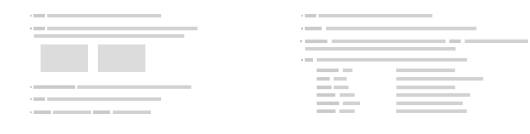

GenerateGradients[numb]
optimizes a set with numb gradients,numb mus be an integer.
GenerateGradients[{numb,fixed}]
optimizes a set with numb gradients, numb must ba an integer and fixed a list of 3D coordinates e.g. {{0,0,1},{0,1,0}}. The fixed gradients will not be moved.
GenerateGradients[{numb1,numb2 …},alpha]
optimizes a multi shel gradient set with numb gradients per shel. If alpha is set to 0.5 equal importance is given tothe optimal distribution of each shell en the enitre set. if alpha is 0 only the sub shels will be optimized, if alpha is set to 1 only the global set wil be optimized.
is based on DOI: 10.1002/mrm.26259 and 10.1002/(SICI)1522-2594(199909)42:3<515::AID-MRM14>3.0.CO;2-Q.

GenerateGradients
GenerateGradients[numb]
optimizes a set with numb gradients,numb mus be an integer.
GenerateGradients[{numb,fixed}]
optimizes a set with numb gradients, numb must ba an integer and fixed a list of 3D coordinates e.g. {{0,0,1},{0,1,0}}. The fixed gradients will not be moved.
GenerateGradients[{numb1,numb2 …},alpha]
optimizes a multi shel gradient set with numb gradients per shel. If alpha is set to 0.5 equal importance is given tothe optimal distribution of each shell en the enitre set. if alpha is 0 only the sub shels will be optimized, if alpha is set to 1 only the global set wil be optimized.
is based on DOI: 10.1002/mrm.26259 and 10.1002/(SICI)1522-2594(199909)42:3<515::AID-MRM14>3.0.CO;2-Q.
Details
- The following options can be given:
-
Steps 1000 Steps is an option GenerateGrads and is the number of step that is used. Runs 1 Runs is an option for GenerateGradients. Set how often the minimization function is run. The best solution of all runs is the output. Default value is 1. VisualOpt False VisualOpt is an option for GenerateGradients. Show the minimization proces of eacht calculation step. Default is False. GradType "Normal" GradType is an option GenerateGradients. It specifies what type of gradient set wil be produced, "Normal" or "OverPlus". ConditionCalc False ConditionCalc is an option for GenerateGradients if set to true GenerateGradients will also give the condition number evolution of the system. FullSphere False FullSphere is an option for GenerateGradients. If set True the gradients will be optimized on a full sphere rather than half a sphere.